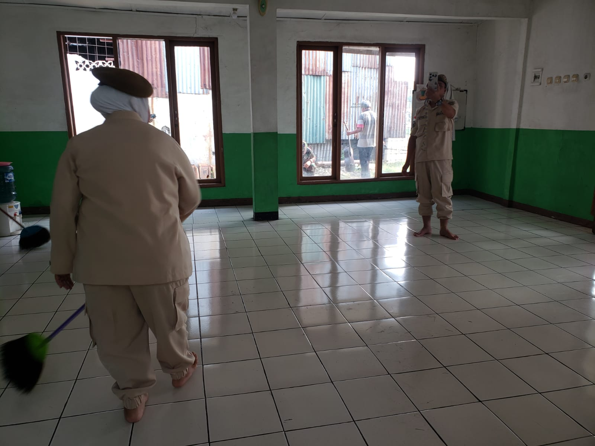
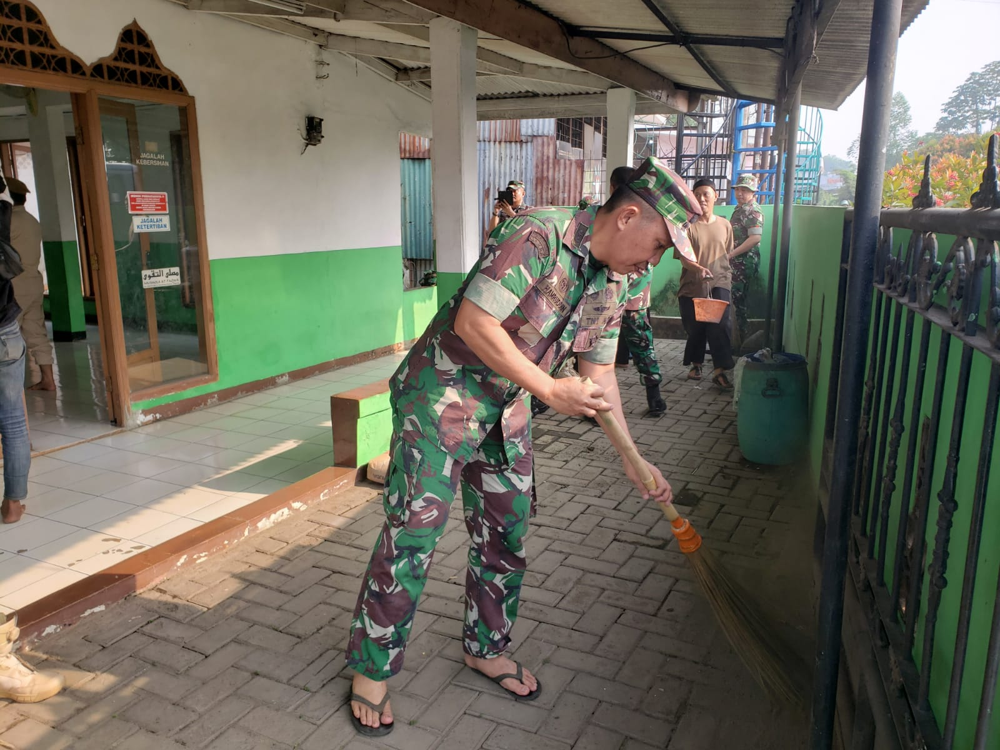
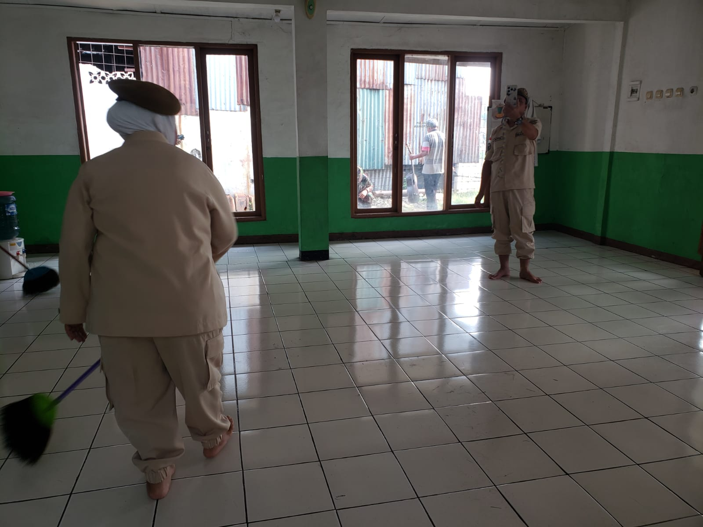
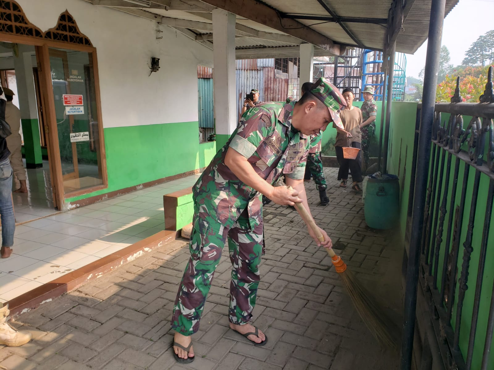

Kegiatan Musholla
Dokumentasi kegiatan sosial dan kebersamaan warga di Musholla Attaqwa
Karya Bakti Kodiklat TNI (25 September 2025)
Pengurus dan jamaah Musholla Attaqwa mengucapkan terima kasih yang sebesar-besarnya kepada Tim Kodiklat TNI atas bantuan dan kepedulian berupa keramik, alat-alat kebersihan, serta kegiatan pembersihan Musholla pada hari Kamis, 25 September 2025 dalam rangka HUT ke-80 TNI.
Semoga Allah Subhanahu wa Ta’ala membalas kebaikan dan pengabdian Bapak-bapak TNI dengan pahala yang berlipat, kesehatan, serta keberkahan dalam setiap langkah. Jazakumullahu khairan katsīra.


 





ParaGoNation sejuta cinta untuk masjid (16 November 2025)
Pengurus dan jamaah Musholla Attaqwa menyampaikan terima kasih yang sebesar-besarnya kepada seluruh Paragonian dan Zaf Kreatifindo atas kepedulian dan kontribusinya dalam kegiatan bakti sosial berupa pengecatan, pembersihan, serta pengadaan alat-alat kebersihan di lingkungan Musholla Attaqwa.
Semoga segala kebaikan, keikhlasan, dan semangat berbagi dari rekan-rekan Paragonian menjadi amal shalih yang diridhai oleh Allah Subhanahu wa Ta’ala. Jazakumullahu khairan katsīra.
Semoga Allah membalas dengan keberkahan, kesehatan, dan kesuksesan dalam setiap langkah, serta menjadikan kebersamaan ini sebagai bagian dari jalan menuju ridha-Nya.